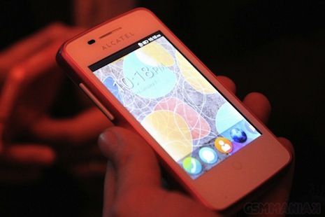
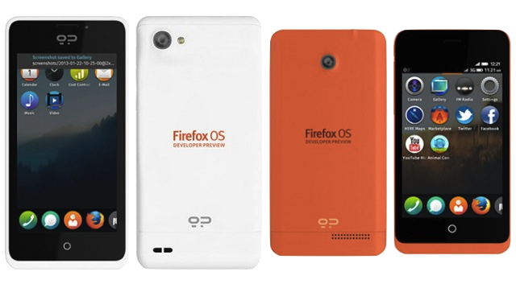
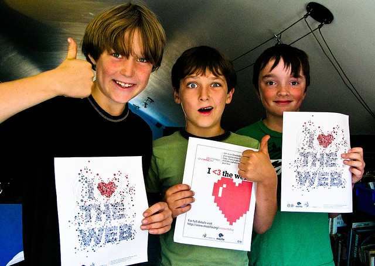
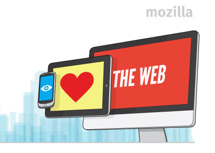
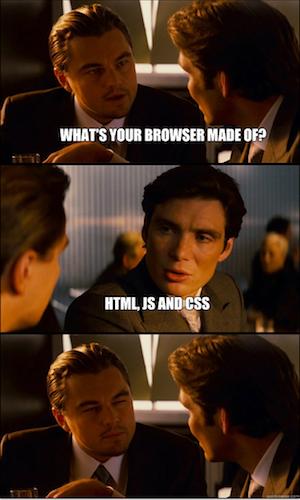
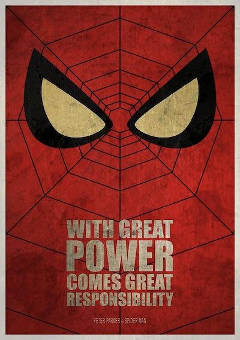
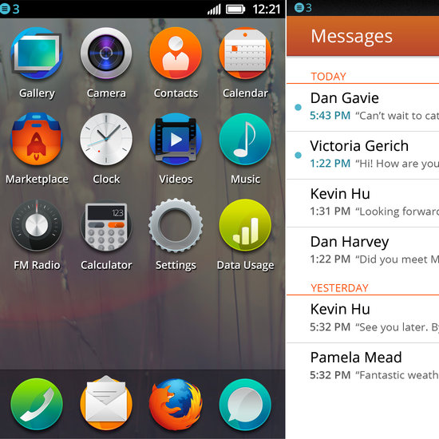

Firefox OS
development
Francisco Jordano
@mepartoconmigoSay hello to the World!
It's been a while, but after some of intense work, Firefox OS is here!

Partners phones almost here!
In MWC 2013 we saw some phones
Partners phones almost here!
From different partners
Say hello to the devices!
Geeksphone already selling developer preview phones!
Why Firefox OS is so cool?
It's really open source!
Gecko (the backend): https://github.com/mozilla-b2g/B2G
Gaia (the frontend): https://github.com/mozilla-b2g/gaia
Why Firefox OS is so cool?
The Web Is The Platform \o/
http://bradfrostweb.com/blog/web/responsive-web-design-missing-the-point/
Why Firefox OS is so cool?
Born to made the web a better place
Why Firefox OS is so cool?
Yes ... everything is HTML + JS + CSS

Why Firefox OS is so cool
Everything ... from the window system
... till the browser
Let's get started
So, what do I need to know to start developing for Firefox OS
New programming languages?
New application life cycles?
Latest programming paradigm teached in Nepal?
... well no ...
Remember we are creating apps
web apps, that are not really different to the webs you are already creating!
Yes, the Web is native in Firefox OS
Declare your apps through the webapp manifest
{
"version": "1",
"name": "Firefox OS Boilerplate App",
"launch_path": "/Firefox-OS-Boilerplate-App/index.html",
"description": "Boilerplate Firefox OS app with example use cases to get started",
"icons": {
"64": "/Firefox-OS-Boilerplate-App/images/logo64.png",
"128": "/Firefox-OS-Boilerplate-App/images/logo128.png"
},
"developer": {
"name": "Robert Nyman",
"url": "http://robertnyman.com"
},
"installs_allowed_from": ["*"],
"default_locale": "en",
"permissions": {
"desktop-notification": {
"description" : "To show notifications"
},
"geolocation": {
"description" : "Marking out user location"
}
}
}
application/x-web-app-manifest+json
... just that?
Almost! We can choose how to distribute our web apps
Hosted apps: All your files belongs ... to your self
Packaged apps: You pack everything you need on a zip file that lives on the phone
Beware about safety!
Permissions, needed for your app, but thinking about the user
New set of Web APIs
To power you apps, to give you control over new hardware!
Of course to be standarised by W3C
Dialer api
var call = navigator.mozTelephony.dial('555-333-222-666');
call.onconnected = function onConnected(evt) {
console.log('Better start to speak now');
};
call.ondisconnected = function onDisconnected(evt) {
console.log('Call too long, dude, your bill is getting a bit crazy');
};
call.onerror = function onError(evt) {
console.log('This is embarrassing');
};
SMS api
var sms = navigator.mozMobileMessage.send('555-333-222-666',
"Mum I'm OK, I finished all the vegies");
sms.onsucces = function onSuccess(evt) {
console.log('Now your mum can go to sleep happy');
};
sms.onerror = function onError(evt) {
console.log('Problems ahead');
};
Device Storage api
var deviceStorage = navigator.getDeviceStorage('/books');
var request = deviceStorage.get('Gone With The Wind.ebook');
request.onsuccess = function onSuccess(evt) {
//request.result is an File object ...
};
var request = deviceStorage.delete('horrible_profile_photo.jpg');
request.onerror = function onError(evt) {
console.log('Deal with it dude');
}
Lots of new APIS
Track them:
https://developer.mozilla.org/en-US/docs/WebAPI
... and some almost ready to land like webRTC
How do we start creating our web apps?
Well, I told you we are in the web, you know better than me!
Let's follow the Firefox OS Boilerplate App by Rober Nyman
My preferred way of working
Browser (Nightly version) ⇒ Firefox OS Simulator ⇒ Device
Trying first in Firefox Nighlty
Same engine than runs in the phone!
Lot of tools for development
Mozilla is mocking the APIs not supported
Need some Web APIs? Try the Firefox OS simulator
Yesterday was released a new version of the simulator: 3.0pre8 \o/
Allow us to try our app running on Gaia
... if possible ...
Always try on the device
... and remember, there could be different devices with different form factors, memory, processor ...
Tips, tricks and magic
The London Underground problem
Now more than ever we need to be aware of our users going offline
We have tools to make our web apps work offline, like packaged apps or old friends like app cache (apps with app cache can declare it on the application manifest)
The London Underground problem
But also we should be aware of the volatility of the connection on a mobile device!
var amIOnline = navigator.onLine;
document.body.addEventListener('offline', function onOffline(evt) {
alert('Hello dear user, you lost your connection');
});
document.body.addEventListener('online', function onLine(evt) {
alert('We are back in business!');
})
Sharing information across applications
Our web app cannot do everything, but can use applications installed for it's goal
Hello Web Activites
"activities": {
"pick": {
"filters": {
"type": ["webcontacts/contact","webcontacts/email"]
},
"disposition": "inline",
"href": "/contacts/index.html?pick",
"returnValue": true
}
}
Sharing information across applications
Asking for a contact
var activity = new MozActivity({
name: 'pick',
data: {
type: 'webcontacts/contact'
}
});
activity.onsuccess = function onSuccess() {
var contact = this.result;
console.log(contact.name);
};
Sharing information across applications
Offering a contact
window.navigator.mozSetMessageHandler('activity', function activityHandler(activity) {
activity.postSuccess({contact: {
'name': 'Pedro'
}});
});
If you like Firefox OS UX ...
BuildingFirefoxOS.com is the design guide we follow
More goodies: identity!
Integration with Mozilla Persona
var currentUser = 'bob@example.com';
navigator.mozid.watch({
loggedInUser: currentUser,
onlogin: function(assertion) {
console.log('Hello ' + currentUser);
},
onlogout: function() {
console.log('We are alone and devastated');
}
});
https://developer.mozilla.org/en-US/docs/Persona/Quick_setup
... and even more goodies: Payments!
(even integrated with user bills in some countries)
var request = navigator.mozPay([signedJWT1, signedJWTn]);
request.onsuccess = function onSuccess() {
console.log('Payment succesfully completed \o/');
};
request.onerror = function onError() {
console.log('Upps! This is embarrassing');
}
http://blog.digital.telefonica.com/2013/04/09/mozilla-web-payments-api/
Web App Distribution
Again breaking the way the market works
Freedom for the developer and the user
var request = navigator.mozApps.install("http://robnyman.github.com/Firefox-OS-Boilerplate-App/manifest.webapp");
request.onsuccess = function() {
// great - display a message, or redirect to a launch page
};
request.onerror = function() {
// whoops - this.error.name has details
};
Web App Distribution
But still keeping the traditional model
@ladybenko: our guest star
Recover soon!!
She will be demoing soon TU|Me for Firefox OS
Last thing!
Collaborate with Firefox OS!
$git clone git://github.com/mozilla-b2g/gaia.git
$cd gaia
$make install-gaia
- Mailing lists: https://lists.mozilla.org/listinfo/dev-gaia , https://lists.mozilla.org/listinfo/dev-b2g
- IRC irc.mozilla.org: #gaia, #b2g, #webapi, #openwebapps